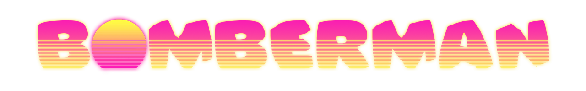
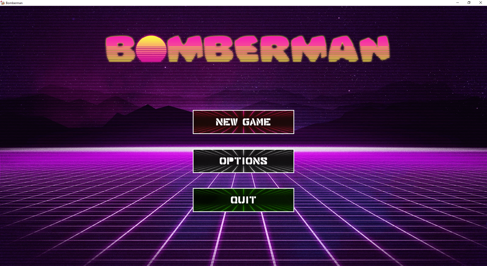
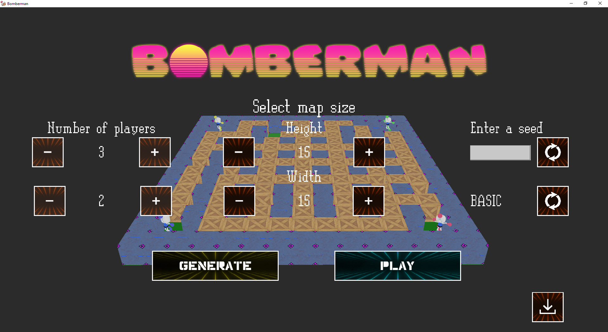
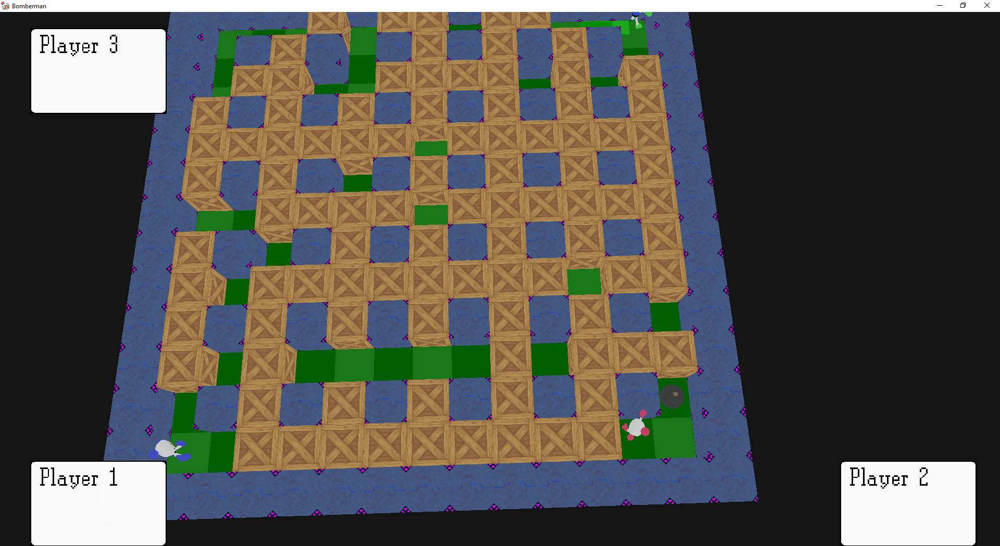

|
Bomberman
|

Bomberman is a project where we try to do an Bomberman-like game with a homemade ECS and a Raylib encapsulation



Player 1 will use zqsd to move & E to drop a bomb
Player 2 will use arrows to move & enter to drop a bomb
Player 3 will use yghj to move & space to drop a bomb
You can build the project yourself!
Requirements
Clone the repository
Go inside the repository and create a build folder
Generate using CMake
Compile according to your platform
Linux
Windows
If you've done nothing wrong, you should have the program compiled!
1.8.17